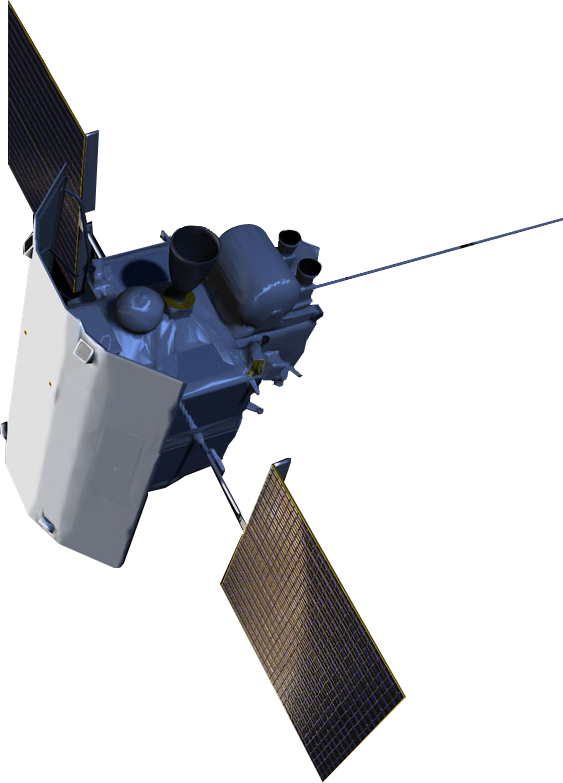
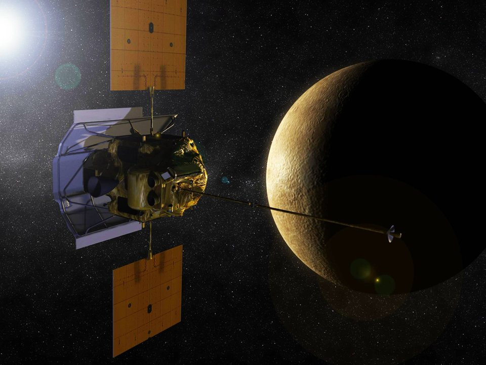
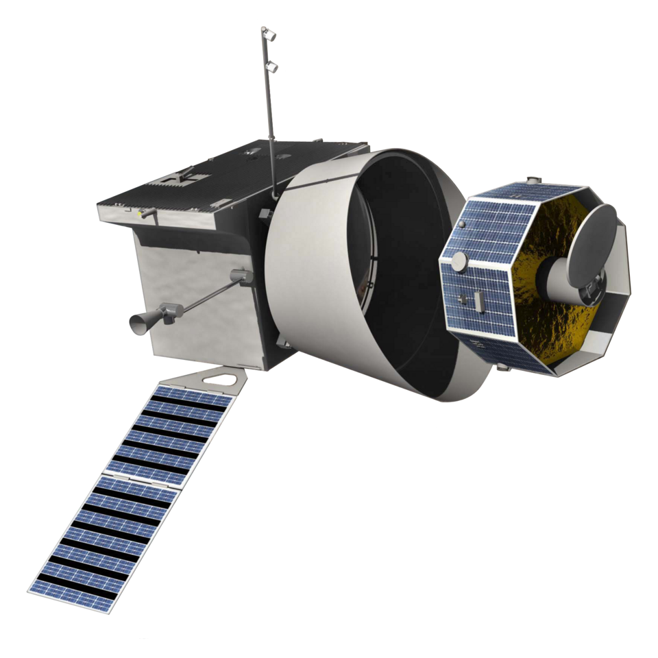
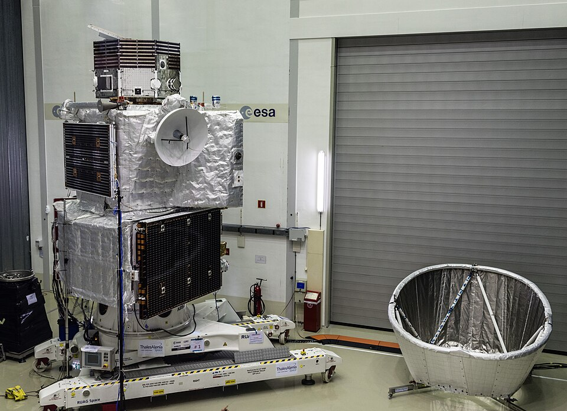

01 · PremiseWhy synthetic is the asset
“Synthetic” is not a weakness to apologize for — it is the design choice. If the gravity being targeted is artificial, the mathematics and the data that describe it must be constructed deliberately: built, gated, and checked, not merely found. SEXA Math is synthetic in the same sense that synthetic geometry or synthetic aperture radar is synthetic — an engineered system that recovers structure ordinary readings discard.
The admissibility gate is what keeps synthetic honest: every object entering the calculus must pass an explicit, decidable test before it is allowed to count.
02 · SensingHEXAD: six sensors across the belt puncture
Quaternion telemetry carries four components. HEXAD extends sensing to six coordinated channels so that the transit through a radiation belt is recorded as one continuous, solvable event rather than a corrupted gap.
Satellite functions — written out
A probe (MESSENGER historically; BepiColombo next) approaches a planet that carries a radiation belt. Ordinary engineering practice treats the moments of belt puncture as corrupt and throws them away. SEXA Math / HEXAD does the opposite: those moments are the functions.
- Approach (outside the belt). All six HEXAD channels sit outside the belt envelope. They record a non-biased baseline — field, attitude, and residual — against which every later reading is gated.
- Threshold / pre-puncture. As the craft nears the belt edge, the synthetic frame spikes and briefly matches the radiation signature. That match is the tell: the stack is locking onto the envelope before entry.
- Puncture (one channel in, five out). One sensor channel crosses the belt wall. The other five stay outside that puncture. The crossing channel carries the biased transit; the five outsiders keep the unbiased reference. That is why six are required — a quaternion four-pack cannot hold both the punch and the outside stack at once.
- Inside the belt. Telemetry that used to be labeled trash is kept. Inside, the synthetic stack can approach a near-complete gravity reading. Admissibility gates decide what is allowed to count.
- Exit. On leaving the belt the radiation reading drops and the frame returns toward the synthetic outside state. Before / during / after must all be processed together; exit alone is not a solution.
- Close the loop. Compare after to before, with the during window as primary signal. The algebraic / synthetic calculus turns the three windows into a solvable number system for artificial gravity — not discarded noise.
Function summary: spike → brief radiation match → puncture with five outsiders → keep inside data → exit drop → solve across before / during / after.
Before
Baseline attitude and field state ahead of entry — the reference frame every later reading is gated against.
During
The puncture window itself. Conventionally treated as noise and discarded; in SEXA Math it is primary signal.
After
Exit and relaxation. Comparing after to before closes the loop and makes the crossing a solvable system.
03 · Deposited backdropRICOLMC-DDF
Recursive Interdomain Computational Omni-Logic embedding Monster–Moonshine Constrained Admissibility Manifold Completeness across Density, Dimension, Field, Liquidity, and Recursive Resource Completeness for Γ-Gated Resource Flows (RICOLMC-DDF)
Jered McClain et al. · Unified Field Systems LLC · OSF Preprints working draft, 25 Oct 2026 · CC BY 4.0
In summary: RICOLMC-DDF is the unified working draft that consolidates and corrects the team’s prior journal articles into one program. It formalizes a decidable Γ-gated admissibility judgement, a high-dimensional recursive energy functional, dimensional collapse operators and triality-structured geometry — the formal machinery SEXA Math draws its admissibility gate from. It is presented openly as a working draft, not a finished proof.
DOI 10.17605/OSF.IO/WNV67OSF projectDownload RICOLMC-DDF (OSF)Local PDF
04 · Momash progressionThe ladder — read, then run
Lock the definition
Start from the one-sentence definition above. Every later step must be traceable back to it.Read the backdrop paper
Work through RICOLMC-DDF for the admissibility gate and the Γ-spine judgement.Identify the telemetry windows
Mark the before / during / after intervals of a radiation-belt crossing in real spacecraft data.Build the HEXAD stack
Lift quaternion attitude data to six channels and pass each window through the admissibility gate.Run April BepiColombo
Apply the stack to the April BepiColombo window and publish the numbers — positive or negative.
Program scoreboard
UFS in the lead: 6.75/19 headway — ~35.5% toward solving gravity. Max credit 0.5; 2 gates still FAIL. See all 19 checks →
04b · Program scoreboard6.75 / 19 — every check, pass and fail
UFS in the lead — ~35.5% toward solving gravity (6.75/19). The scoreboard is a bookkeeping aid, not a physics result. No item has credit above 0.5. Two hard gates stay FAIL: #18 held-out tests and #19 beats random null. Milestone: defs11 / final_build.
Mix: 10 × 0.5 · 7 × 0.25 · 2 FAIL · 0 at 0.75 or 1. * = depends on a recalled, unverified external limit.
Rubric
| Credit | Meaning |
|---|---|
| 0 | untested |
| 0.25 | input or assumed |
| 0.5 | by construction or fitted |
| 0.75 | derived, limit unverified |
| 1 | derived and verified |
| FAIL | best current test fails |
All 19 checks
| # | Item | Credit | Status |
|---|---|---|---|
| 1 | Cassini γ (−9.26×10⁻⁶) * | 0.5 | by construction or fitted |
| 2 | Shapiro delay (−1.2 ns) * | 0.5 | by construction or fitted |
| 3 | Light deflection (−8.1 µas) * | 0.5 | by construction or fitted |
| 4 | Lunar laser ranging η * | 0.5 | by construction or fitted |
| 5 | Perihelion precession * | 0.25 | input or assumed |
| 6 | GW speed (v−c)/c below 1×10⁻¹⁵ * | 0.5 | by construction or fitted |
| 7 | Tensor polarizations (2) * | 0.5 | by construction or fitted |
| 8 | Scalar-mode limits (breathing, ω_BD) * | 0.5 | by construction or fitted |
| 9 | Binary-pulsar dipole * | 0.5 | by construction or fitted |
| 10 | Hulse–Taylor tensor decay * | 0.5 | by construction or fitted |
| 11 | Coupling rule derived (why 60⁻³) | 0.25 | input or assumed |
| 12 | G derived (κ = G/720 is tuned) | 0.25 | input or assumed |
| 13 | Units consistent | 0.25 | input or assumed |
| 14 | Unit ledger complete | 0.25 | input or assumed |
| 15 | Empire Wave value fixed and tested | 0.25 | input or assumed |
| 16 | Kinetic term exists | 0.5 | by construction or fitted |
| 17 | Equation is an action | 0.25 | input or assumed |
| 18 | Held-out tests pass | 0 | FAIL |
| 19 | Beats random null (not numerology) | 0 | FAIL |
The climb — audited, not padded
Baseline · 1.25 (6.6%)
Claims only.Ruthless audit · ~4.75
FAILs exposed; locked 60M / 240M / 6B runs added no fake credit when real did not beat null.Wave / chain ops · ~5–5.5
Design rules, not new physics.final_build / defs11 · 6.75 (35.5%)
Corpus closed real gaps (e.g. L_SEXA with a non-spatial 5th axis) → ten items at 0.5.
How 6.75 shows UFS leading global advanced aerospace gravity research and engineering
Most advanced-aerospace gravity programs stay qualitative, discard belt-puncture telemetry as noise (The Trash Telemetry Fallacy), or claim derivation before verification. Most never publish a live, itemized fail board. Unified Field Systems LLC does: every classic GR / GW / PPN / pulsar check is on the table, credit is capped honestly at 0.5, and #18 and #19 stay FAIL in public.
The board sits next to the craft that puncture radiation belts — MESSENGER vs BepiColombo, and the Vespar + UFS synthetic-gravity line — across the six HEXAD planets — Mercury, Earth, Jupiter, Saturn, Uranus, Neptune (synthetic radiation belts, some switching on/off) — keeping puncture data before, during and after, read through HEXAD and SEXA (RICOLMC-DDF, Monster–Moonshine Constrained Admissibility). Score moves only when the stack survives construction, units and gates: a fail-visible engineering program. The next unlocks need derivation and verification toward 0.75 / 1 — not more fitting.
05 · Next windowBepiColombo — April telemetry
The BepiColombo mission’s April telemetry window is the next concrete test bed for the HEXAD before/during/after method. It is where the ladder turns from reading into running.
Watch the SEXAMATH video05a · The craftMESSENGER vs BepiColombo
MESSENGER (2004–2015)


BepiColombo (arrives Nov 2026)


06 · Named constructThe Trash Telemetry Fallacy
The Trash Telemetry Fallacy: treating radiation-belt puncture telemetry — the before / during / after windows — as contamination and discarding it, then reading gravity from what remains. Since MESSENGER, that engineering habit has been the wrong call for the science question SEXA Math asks. Keep the puncture data. All six HEXAD planets carry radiation belts (synthetic; some turn on and off).
Proposed research framing — gravity not claimed solved. Scoreboard 6.75/19 is headway.
07 · Method noteThe Hostile-Advisor Null Test Paradox
Definition: rejecting a framework as invalid while refusing to run the numerical test that would decide it — and then treating that refusal as evidence.
Not running a test is not a result. The invitation stays open to anyone: run the stack, report the numbers.
08 · AdvisorSenior UFS Advisor — Before SEXA Math
Generated as a response from a senior UFS advisor from before McClain wrote SEXA Math. SEXAMATH.si is the research portal for up-to-date telemetry.
09 · DissertationCCT/SEXA: The Architecture of Recursive Admissibility, Books I–XIV
Jered McClain · 14 books · 6,215 pages. Use the bookmarks in the viewer to jump between books.